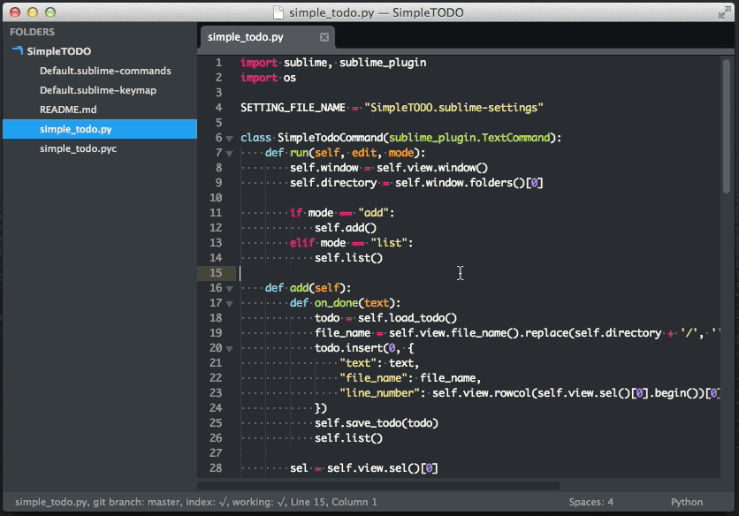

Linux, Programação e Games
Melhores programas para linux - parte 1
Hoje mostrarei alguns dos meus programas linux favoritos!

Veja, o primeiro é o Sublime Text 3, que é umm editor multiplataformas para Html, Css, Java, Java Script, Python, C, C++, Sql, Shell Script, dentre outras linguagens de programação. Ele possue multiplas funcionalidades como criar snipets (códigos prontos), puglins; tem diversos temas.
Acesse o site Sublime Text .

O segundo é o Brackets, que é umm editor multiplataformas voltado para programação web (Html, Css, Java Script) mas é posível utilizá-la para outras linguagens como Java, Python, C, C++, Sql, Shell Script, dentre outras linguagens de programação. Ele possue multiplas funcionalidades snipets (códigos prontos), puglins; tem diversos temas.
Acesse o site Brackets .
« Previous
| 1 |
Next »